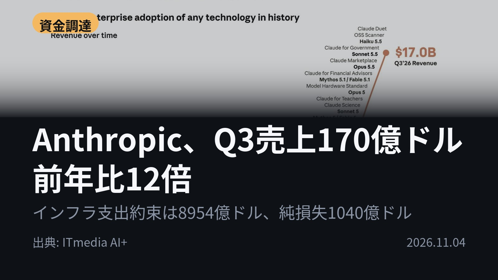
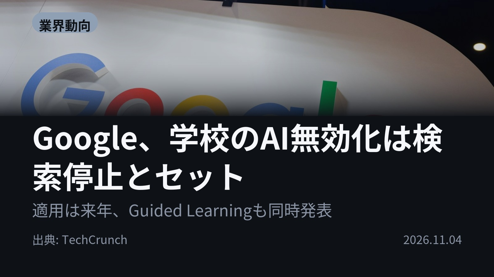
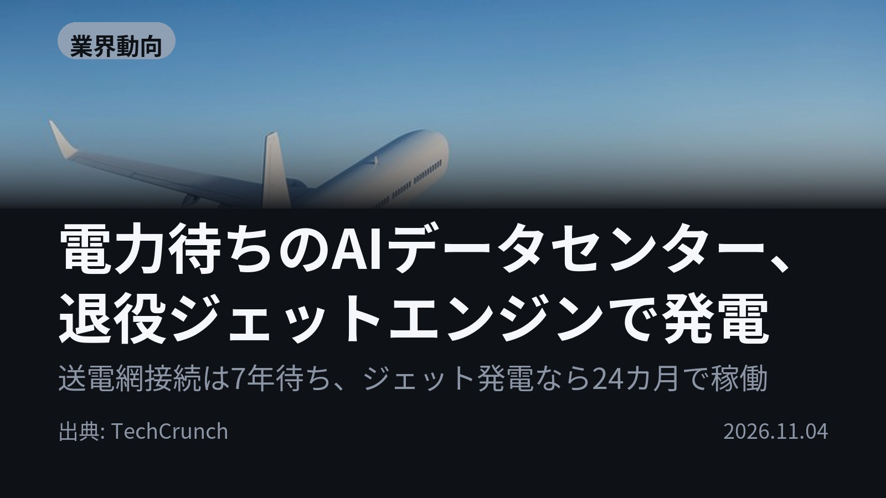
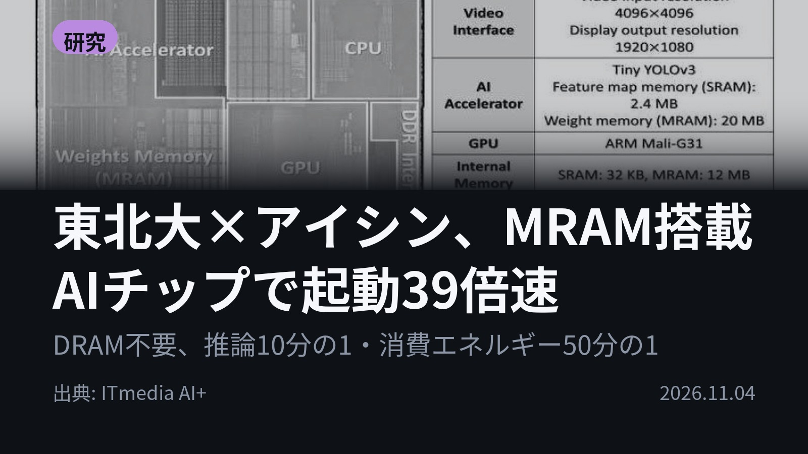
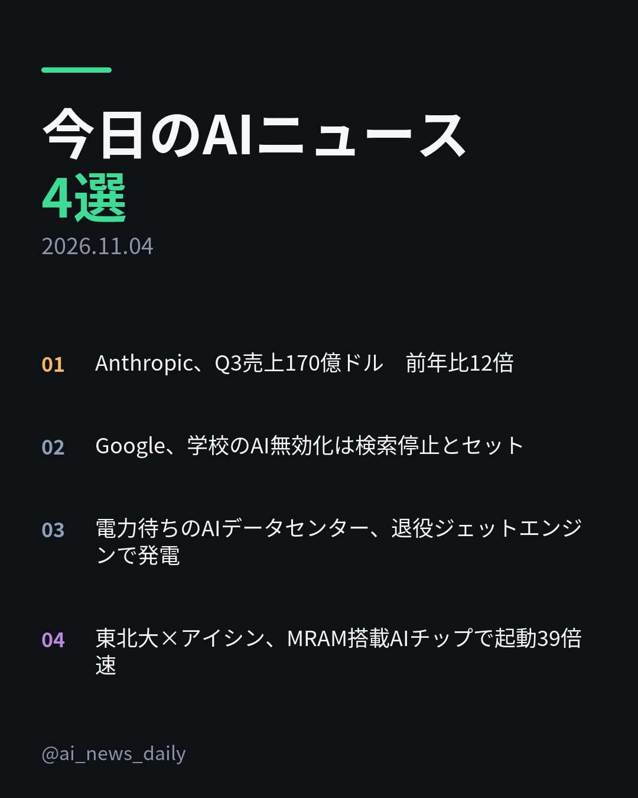
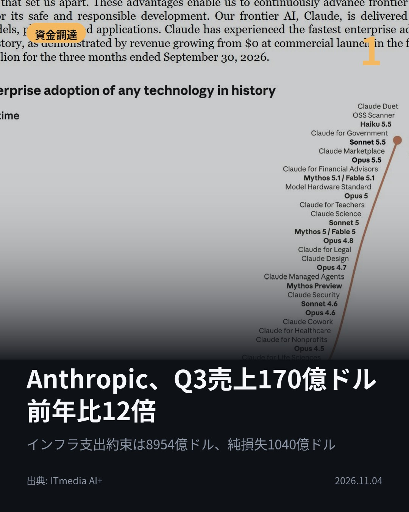
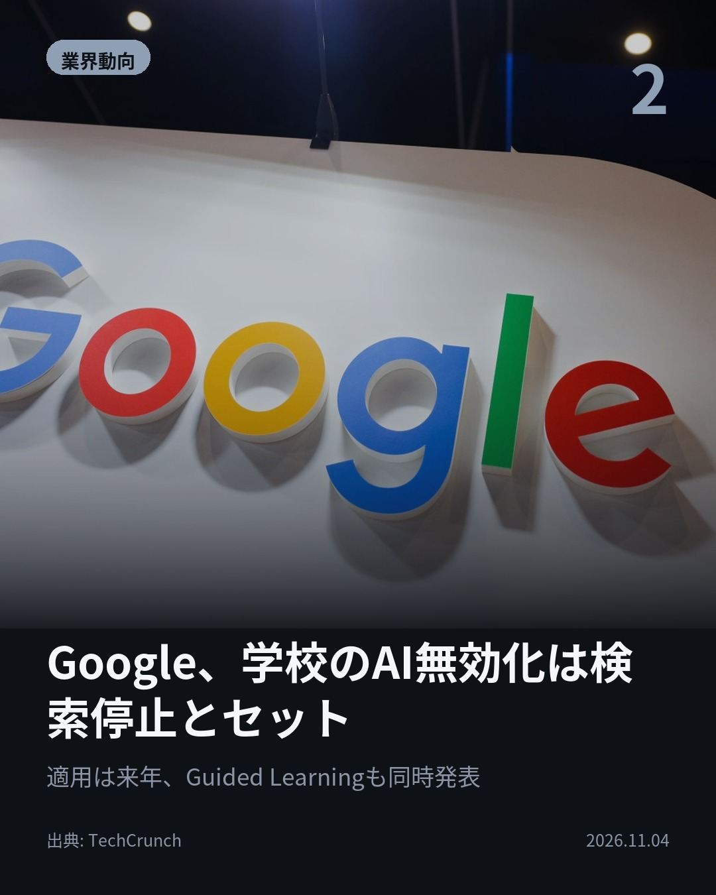
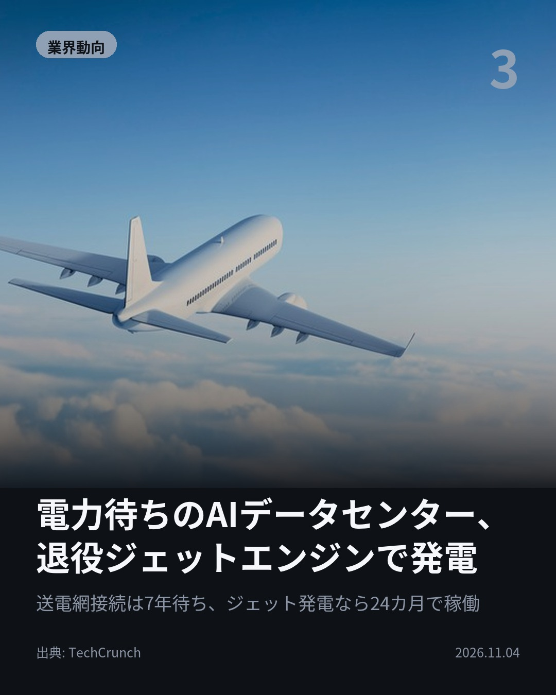
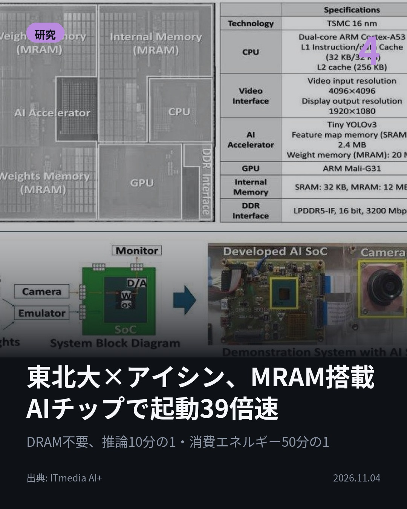

今日のAIニュース 下書き
2026-11-04 生成 11/04 12:24
⚠ ファクト照合で要確認の項目があります。
各ニュースの警告を確認してから投稿してください。
X（4投稿）
Anthropic、Q3売上170億ドル 前年比12倍
原題: Anthropic、IPO申請書を修正 7?9月売上高は約170億ドル、インフラ契約額は約8954億ドル

7〜9月の売上高は約170億ドル、前年同期の12.3倍。 AnthropicがIPO申請書の修正版をSECに提出。一方、計算資源・インフラの将来支出約束額は約8954億ドル。1〜9月の純損失は1040億ドル。 #AI #Anthropic（出典: ITmedia AI+）
重み 209 / 280（見た目 134字）

Google、学校のAI無効化は検索停止とセット
原題: Google will let schools disable its AI tools, but not without sacrificing Search

AIだけ無効、という選択肢はない。 Googleは来年から、幼稚園〜高校の生徒向けAI機能を、学校管理者が有効にしない限り無効にすると発表。検索とAIは一体化しており、AIを全面制限した学校では検索も使えなくなる。 #AI #Google（出典: TechCrunch）
重み 231 / 280（見た目 133字）
要確認:
［固有名詞］チューター — この語が本文に見つかりません
［固有名詞］TechCrunch — この語が本文に見つかりません

電力待ちのAIデータセンター、退役ジェットエンジンで発電
原題: Data centers are turning to old jet engines as the wait for power grows

退役機のエンジンが、AIデータセンターを回している。 送電網への接続待ちを避け、天然ガスで回す改造エンジンで自家発電。系統接続は北バージニアで約7年、ジェット式なら24カ月で稼働できるという。xAIは8基を設置済み。 #AI #データセンター（出典: TechCrunch）
重み 246 / 280（見た目 135字）
要確認:
［数値］7年 — この数値の根拠が本文に見つかりません
［固有名詞］エンジン — この語が本文に見つかりません
［固有名詞］データセンター — この語が本文に見つかりません
［固有名詞］バージニア — この語が本文に見つかりません
［固有名詞］ジェット — この語が本文に見つかりません
［固有名詞］ジェットエンジン — この語が本文に見つかりません
［固有名詞］ミシシッピ — この語が本文に見つかりません
［固有名詞］メンフィス — この語が本文に見つかりません
［固有名詞］タービン — この語が本文に見つかりません

東北大×アイシン、MRAM搭載AIチップで起動39倍速
原題: 東北大とアイシンがSTT-MRAM搭載AIチップを開発、16nmプロセスでは世界初

外付けDRAMが要らないAIチップができた。 東北大とアイシンが開発。電源を切っても消えないSTT-MRAMを使い、OS起動を従来比39倍高速化、AI推論を10分の1、消費エネルギーを50分の1に。16nmプロセスで世界初。 #AI #半導体（出典: ITmedia AI+）
重み 226 / 280（見た目 136字）
要確認:
［固有名詞］アイシン — この語が本文に見つかりません
［固有名詞］エネルギー — この語が本文に見つかりません
［固有名詞］プロセス — この語が本文に見つかりません

Instagram（カルーセル 6枚）


1. 表紙


2. ニュース


3. ニュース


4. ニュース


5. ニュース

6. CTA
Anthropicの7〜9月売上は前年同期の12倍、それでも純損失は1040億ドル。 今日は、AIを動かす「お金」と「電力」の現実が数字で見えた日です。 1. 11月2日にSECへ提出した修正版で、7〜9月の売上高は約170億ドル、前四半期比47%増と判明。ただ営業損益は5億6700万ドルの赤字に転じ、純損失1040億ドルの大半は企業価値上昇に伴う約943億ドルの会計上の評価損です。計算資源への将来支出約束は約8954億ドル、うち約2138億ドルは条件次第で解約可能とのこと。(ITmedia AI+) 2. 来年から、幼稚園〜高校の生徒向けのGemini、NotebookLM、Gemini in Classroom、Google検索のAI機能は、学校管理者が有効にしない限り無効になります。ただし検索とAIは一体化しているため、AIを全面的に制限した学校では生徒がGoogle検索そのものを使えなくなります。同時に、答えを教えるのではなく理解を深めさせるAIチューター「Guided Learning」の学校向け提供も発表されました。(TechCrunch) 3. 北バージニアで100MWを送電網につなぐには約7年。待てない事業者が、退役機から外して天然ガス燃焼に改造したジェットエンジンで自家発電を始めています。xAIはミシシッピ州に8基を設置し、メンフィスのColossus 2データセンターに電力を供給。ただし通常のガス発電用タービンより効率が低く、排出も多いという欠点があります。(TechCrunch) 4. 東北大学とアイシンが11月2日に発表。TSMCの16nm FinFETプロセスで製造し、32MBのSTT-MRAMにOSの起動データとAIモデルの重みを保持することで、外付けDRAMやSSDからのデータ転送をなくしました。OS起動時間は従来の約2.5秒から65.7msへ、AI推論は594.6msから58.5msに短縮。11月の国際学会A-SSCC 2026で発表予定です。(ITmedia AI+) 売上が12倍になっても、その裏には数千億ドル規模のインフラ契約と、電力を待つ現場があります。 毎朝、AIニュースを4本に絞ってまとめています。気になった方はフォローと保存をどうぞ。 #AI #生成AI #人工知能 #テクノロジー #AIニュース #Anthropic #Claude #IPO #Google #Gemini #NotebookLM #教育AI #データセンター #電力 #半導体 #MRAM #東北大学 #アイシン #xAI #ArtificialIntelligence #TechNews #EdgeAI #DataCenter
1147字（Instagram上限 2,200字）
この日の選定理由
Anthropic、Q3売上170億ドル 前年比12倍
急成長の売上と、国家予算級のインフラ契約が同時に開示された。AI企業の収益構造とリスクを数字で把握できる一次情報。
Google、学校のAI無効化は検索停止とセット
AI抜きの検索という選択肢がなくなり、Chromebook依存の学校はAI受け入れを事実上強いられる。Googleの教育市場支配力の表れ。
電力待ちのAIデータセンター、退役ジェットエンジンで発電
AI拡張のボトルネックがチップではなく電力であることを象徴する話。効率と環境負荷を犠牲にしてでも速度を取る業界の切迫度が分かる。
東北大×アイシン、MRAM搭載AIチップで起動39倍速
不揮発メモリにモデル重みを置くことでデータ転送自体をなくす発想。車載などエッジAIの省電力化に直結する日本発の成果。